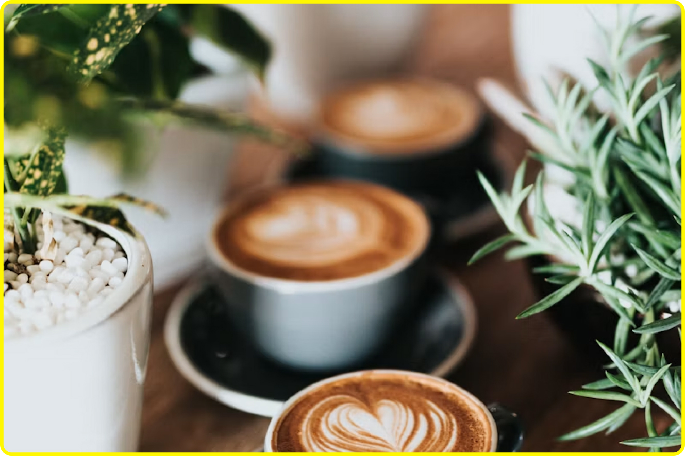
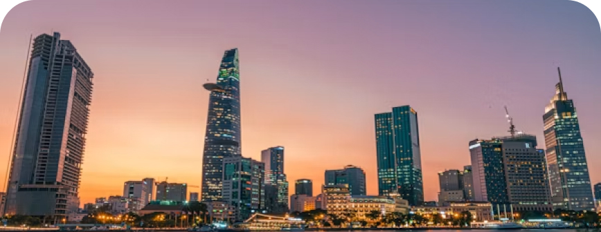
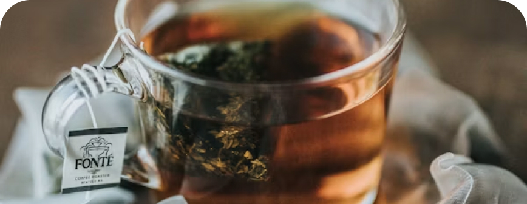
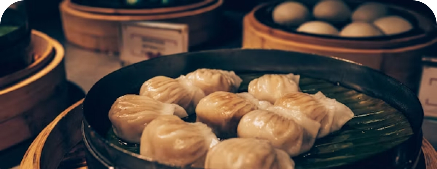
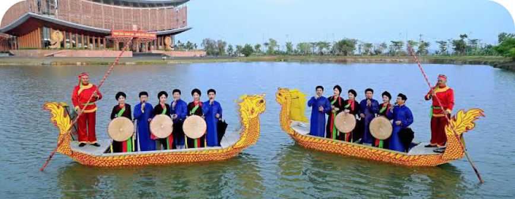
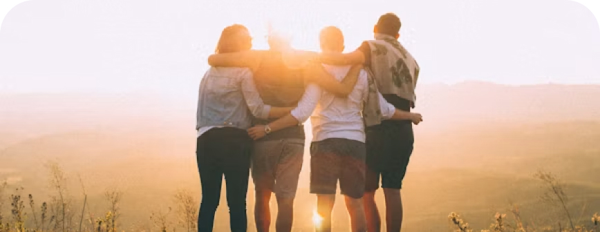
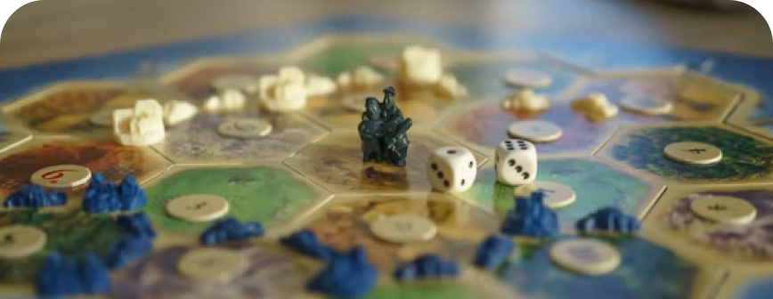
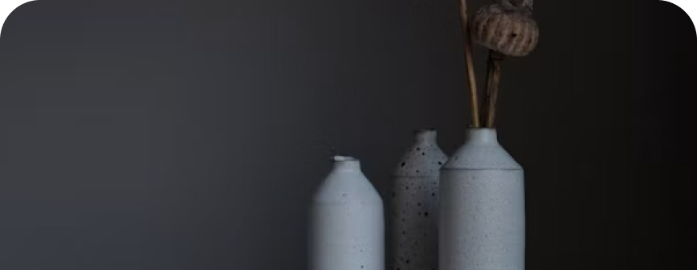
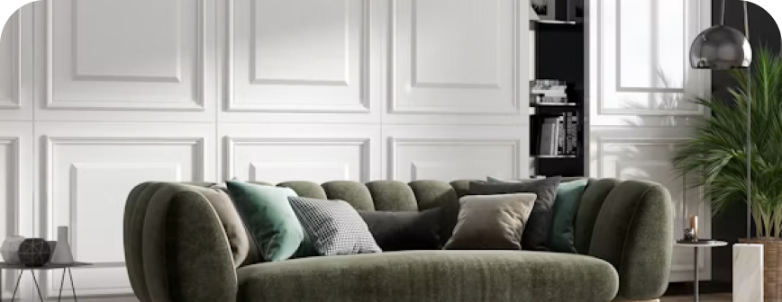

Cả Nước
Tết Nguyên Đán Cổ Truyền
Tết Nguyên Đán Cổ Truyền
Tết Nguyên Đán là lễ hội lớn nhất trong năm của người Việt Nam, là thời điểm gia đình đoàn tụ, tưởng nhớ tổ tiên và...
Hành trình khám phá vẻ đẹp bất tận của văn hóa, lễ hội, nghệ thuật dân gian và truyền thống lâu đời gắn liền với tâm hồn con người Việt Nam qua 3 miền Bắc - Trung - Nam.

Văn hóa Việt Nam là dòng chảy bền bỉ qua hàng ngàn năm lịch sử dựng nước và giữ nước. Đó là sự kết tinh của tinh thần yêu nước, lòng nhân ái, sự gắn kết cộng đồng và tình yêu thiên nhiên sâu sắc.
Từ hình ảnh chiếc Nón Lá mộc mạc, tà Áo Dài thướt tha, tiếng trống hội làng rộn rã đầu xuân cho đến những nét chạm khắc tinh xảo trên mái đình làng cổ... tất cả đã hợp thành bức tranh văn hóa đa sắc màu nhưng thống nhất trong cội nguồn dân tộc.
KHO TÀNG VĂN HÓA
Tết Nguyên Đán là lễ hội lớn nhất trong năm của người Việt Nam, là thời điểm gia đình đoàn tụ, tưởng nhớ tổ tiên và...

Áo dài là trang phục truyền thống biểu tượng cho nét đẹp kín đáo, thướt tha và thanh lịch của người phụ nữ Việt...

Nghệ thuật thưởng trà của người Việt mang nét mộc mạc nhưng tinh tế với trà sen, trà lài, trà mạn Thái Nguyên...

Múa rối nước là loại hình nghệ thuật sân khấu dân gian độc đáo ra đời từ văn hóa lúa nước Đồng bằng Bắc Bộ. Con r...
Cải lương là loại hình kịch hát có nguồn gốc từ Nam Bộ, kết hợp giữa Đờn ca tài tử và sân khấu hiện đại. Với giọng ca...

Cải lương là loại hình kịch hát có nguồn gốc từ Nam Bộ, kết hợp giữa Đờn ca tài tử và sân khấu hiện đại. Với giọng ca...

Môn thể thao dân gian đòi hỏi tinh thần đoàn kết và sức mạnh tập thể. Nghi lễ kéo co ở nhiều vùng quê còn mang...

Trò chơi trí tuệ quen thuộc của trẻ em Việt Nam với bàn cờ vẽ trên đất và những hòn sỏi mộc mạc, giúp rèn luyện khả...

Làng gốm lâu đời bên sông Hồng nổi tiếng với các sản phẩm gốm sứ tinh xảo, men ngọc, men rạn đặc trưng qua...
Dòng tranh in từ bản gỗ trên giấy điệp tự nhiên với màu sắc chế tác từ than lá tre, hoa hoa đò, sò điệp... mang đề tài...

Làng lụa trần mịn, óng ả nổi tiếng từ thời nhà Nguyễn. Lụa Vạn Phúc nhẹ nhàng, thoáng mát và bền đẹp cùng thời...
Tự Hào Dân Tộc
Những di sản vô giá được UNESCO công nhận, góp phần khẳng định vị thế văn hóa Việt Nam trên bản đồ thế giới.
Nhấp vào từng miền để xem các di sản tiêu biểu đại diện cho vùng đất đó.
"Di sản văn hóa là chất keo kết nối quá khứ với hiện tại, nâng tầm tâm hồn người Việt trong hội nhập quốc tế."
Âm nhạc bác học truyền thống trên sân khấu cung đình, biểu tượng cho uy quyền và nét đẹp đài các.
Nghệ thuật trình diễn dân ca đối đáp đặc sắc của vùng Kinh Bắc với trang phục độc đáo.
Loại hình dân ca lễ nghi cầu mùa, gắn liền với tín ngưỡng thờ cúng Hùng Vương.
Biểu tượng gắn kết cộng đồng, lòng tri ân công đức tổ tiên dựng nước.